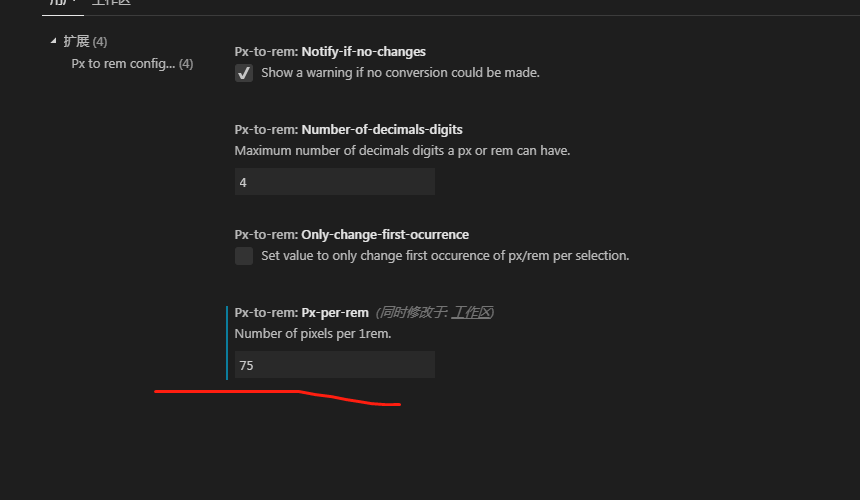
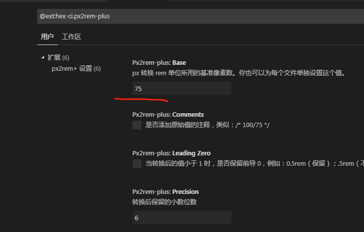

最近在和设计沟通关于设计图尺寸大小和前端实际页面尺寸大小不一致的情况，我们的UI设计是使用的iPone6的，（iphone6: 375px*667px 实际像素：750px*1334px）如果按照她给的尺寸直接复制那么你的页面尺寸就是一个放大镜，正常人都知道那是不对的，我在做的时候有两种解决办法：
一、UI设计尺寸定基数
可以和UI沟通在给你的标记尺寸大小时候，让她基于一个数值，一般是16px。给你标注的时候选择保留两个小数，给你标注成px或者rem。
开发者这时候需要配置开发者工具了，我使用的是 Visual Studio Code，需要安装插件cssrem,安装完成时候再次重启，可以看到px和rem的转换。
二、使用lib-flexible适配UI尺寸
使用lib-flexible.js需要在开始引入可以npm引入或者html引入。
使用lib-flexible.js需要注释：html中的
html引入：
引入地址：https://github.com/821945617/tools下载lib-flexible.js
使用这种引入方式需要计算px与rem的兑换公式，如果一个div的宽度在iPone6设计稿上面为200px，那么750/10 = 75 ，实际rem就是200/75 = 2.666667rem,即这个公式是：
需转换的px值 / 设计稿宽度px值 * 10
npm引入
npm install lib-flexible --save
import "lib-flexible" // 在main.js引入
需要安装px转rem插件安装px2rem-loader自动将px转换为rem
npm install px2rem-loader --save-dev
接下来就是配置px2rem
在build/uitils.js中添加配置
exports.cssLoaders = function (options) {
options = options || {}
const cssLoader = {
loader: 'css-loader',
options: {
sourceMap: options.sourceMap,
importLoader: 2 // 在css-loader前引用的loader的数目，默认为0，如果不加,那么@important的外部文件不能正常转换，如果还不行，试着调大字数
}
}
const px2remLoader = {
loader: 'px2rem-loader',
options: {
emUnit: 75 // 设计稿的1/10
}
}
在下面的generateLoaders方法配置：
function generateLoaders (loader, loaderOptions) {
const loaders = options.usePostCSS ? [cssLoader, postcssLoader, px2remLoader] : [cssLoader, px2remLoader]
if (loader) {
loaders.push({
loader: loader + '-loader',
options: Object.assign({}, loaderOptions, {
sourceMap: options.sourceMap
})
})
}安装px2rem后使用px有些变化，主要有三个方面需要注意：
1、直接写px，编译后会直接转化成rem —- 除开下面两种情况，其他长度用这个
2、在px后面添加/no/，不会转化px，会原样输出。 — 一般border需用这个
3、在px后面添加/px/,会根据dpr的不同，生成三套代码。—- 一般字体需用这个
示例代码
.div{
width: 150px;
height: 64px; /*px*/
font-size: 28px; /*px*/
border: 1px solid #ddd; /*no*/
}注意：以下是使用了UI框架字体缩小配置
这里有个问题，如果你使用了UI框架，引入框架的样式会字体很小，这时候就需要手动转px变rem了。
首先删除px2remLoader 修改配置 在build/uitils.js中generateLoaders方法配置px2remLoader删除
function generateLoaders (loader, loaderOptions) {
const loaders = options.usePostCSS ? [cssLoader, postcssLoader] : [cssLoader]
if (loader) {
loaders.push({
loader: loader + '-loader',
options: Object.assign({}, loaderOptions, {
sourceMap: options.sourceMap
})
})
}
一、卸载postcss-px2rem（如果有）
npm uninstall postcss-px2rem --save-dev
二、安装postcss-px2rem-exclude
npm install postcss-px2rem-exclude --save
三、正确的配置位置是项目根目录下的postcss.config.js（或者是postcss.js）文件，如果你的项目没有生成这个独立文件，就需要在你的package.json里设置。
module.exports = {
'plugins': {
'postcss-px2rem-exclude': {
remUnit: 75,
exclude: /node_modules|folder_name/i
}
}
}四、html添加<meta></meta>
这时仍需要自适应适配meta
编辑器
这里你可以使用手动转rem的插件或者自动插件
1、手动插件px to rem

在Vscode插件px to rem的扩展配置设置中，如果设计图是750px确保这里是75。使用快捷键ALT+Z可以转化为rem
2、自动插件px2rem
